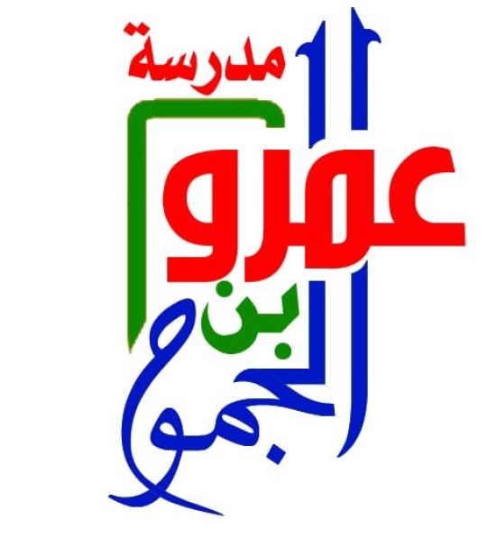

اختبار تفاعلي في
مادة الاحياء
الفصل الدراسي الأول
الصف التاسع
اعداد الأسئلة : أ.أحمد الفارسي
تصميم وبرمجة : أ.طلال المحرزي
ولاية بركاء
surmad7@gmail.com
دخول
سؤال
التالي
السؤال 1 من 3
0
إعادة المحاولة